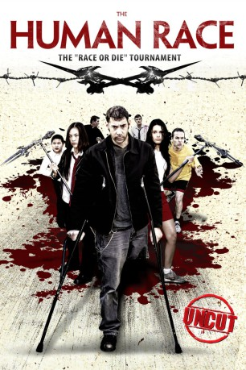

#8491 The Human Race - The Race or Die Tournament
 
 IMDB-Wertung: 5.3 / 10
IMDB-Wertung: 5.3 / 10  Metascore: 0
Metascore: 0 
80 Menschen werden aus ihrer gewohnten Umgebung gerissen und finden sich in einer Arena wieder. Junge und Alte, Sportliche und Behinderte, Reiche und Arme sind gezwungen, ein blutiges Spiel zu spielen. Die Regeln: Nur einer kann diesen Krieg lebend wieder verlassen! Die Schule, das Haus und das Gefängnis sind sicher. Folge den Pfeilen, oder du stirbst. Bleibe auf dem Pfad, oder du stirbst. Wenn du überrundet wirst, stirbst du. Berühre nicht das Gras, sonst stirbst du. Lauf oder stirb!
Jahr: 2013
Dauer: 87 Minuten
FSK: 18
Land: USA Studio: XLrator MediaTonspuren: DTS - ,
Untertitel: Deutsch,
Auflösung: 1080p (1920x1080) Größe: 7577 MB
Genre: Action, Horror, Sci-Fi
Regisseur: Paul Hough
Drehbuch: Paul Hough
Soundtrack: Marinho Nobre
Darsteller:
- Paul McCarthy-Boyington als Justin
- Eddie McGee als Eddie
- Trista Robinson als Deaf Female
- T. Arthur Cottam als Deaf Male
- Fred Coury als Yellow Jersey
- B. Anthony Cohen als The Priest
- J. Louis Reid als War Vet
- Richard Gale als Evil Brother
- Luke Y. Thompson als Orange Vest
- Trip Hope als Jim Phillips
- Domiziano Arcangeli als Gypsy
- Holly Clapham als Sarah Gray
- Megan Frances als Out Of Breath Runner
- Amber Jenkins als Running Victim Sally
- Tiffany Kimbrough als Running Woman
- Alex Lvovsky als A victim
- Tisha Rivera als Lady Running
- Ryan Sherman als Running Lawyer
- Brianna Lauren Jackson als Veronica
- Noel Britton als Stressed Out
- Celine Tien als Ting
- Ian Tien als Shio Lau
- Jonica Patella als Homeless
- Tiana Smith-Jones als Dorothy
- Katie Marengo-Compton als Amy
- Amir Khanbabaei als Ali
- Creep Creepersin als The Blob
- Tracey Adlai als Festival Founder
- Lisa 'George' Bell als Business Woman
- Marco Capem als Enigma Runner
- Sean Decker als Johnny Ratchet
- Greg L. Glass als Male Runner
- Drew Hampton als #49
- Mark Hampton als #48
- Edward Joyce als Principal Stone
- Elizabeth Ann Koshak als Running Woman
- Adrian Merendon als Running business man
- Kristina Plisko als Amber
- Becky Porter als Soccer Mom
- JohnRobert Schoen als Big Guy
- Chris Vick als Hospital Attending
- Lonnie 'Lono' Woodley als Stark - Running Psychologist
- Deann Young als Vicky - Psychologist's Patient
Datei: X:\FSK18-2013\Human Race - The Race or Die Tournament, The (2013, FSK18, 1920x1080).mkv seit 08.03.2018
Festplatte: FSK18
 Es gibt insgesamt 26 Filme in der Gruppe 'FSK18-2013'
Es gibt insgesamt 26 Filme in der Gruppe 'FSK18-2013'